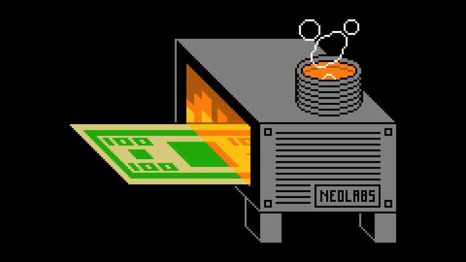
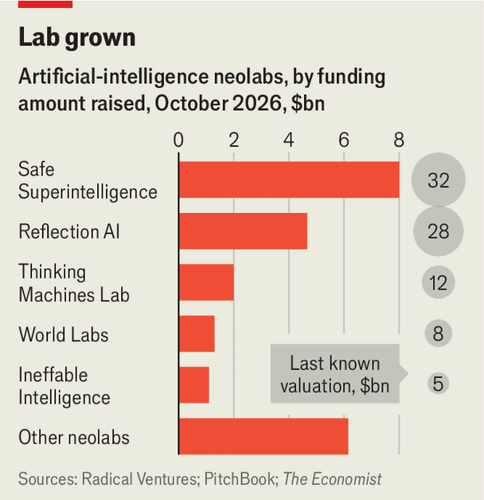

AI neolabs are raising huge sums. Most have little to show for it
Superstar researchers who branch out on their own need to start producing results
Oct 15th 2026
GEORGES DORIOT, a founding father of venture capital (VC), described his job as judging “a man and an idea”. Many Silicon Valley investors looking to make mega-bucks from the artificial-intelligence boom have embraced a similarly minimalist philosophy. A string of AI superstars with little more than a vague ambition have raised billions from VC investors to decamp from established model-makers and set up their own so-called neolabs. So far most have little to show for it.
The neolab era began in June 2024 with the launch of Safe Superintelligence (SSI) by Ilya Sutskever, a co-founder of OpenAI. Two years later a total of 29 neolabs had been founded, according to a count by Radical Ventures, a VC firm. This cohort has now raised a combined $23bn, according to figures from PitchBook, a data provider (see chart). Among the list is Reflection AI, whose open-weight Beam model, announced on October 5th, was hailed as America’s answer to the cheap Chinese models that have rapidly gained ground in the West.

Other neolabs, however, have not yet achieved much with their funding. Under 35% of the startups in Radical Ventures’ cohort have released commercial offerings, according to The Economist’s analysis of public announcements. A greater share—slightly over half—have released code that developers can incorporate into their own products, but these are often billed as research demos meant only to showcase the approach a neolab is taking.
SSI, last valued at $32bn, may be the least hurried of the bunch. Mr Sutskever, one of AI’s most decorated researchers, has said that his neolab does not plan to release a product until it reaches “superintelligence”. (It hasn’t yet.) In July he declared that SSI at last had research “worthy of scaling up”, without revealing any details. Nvidia, a chip colossus, got a peek and handed the startup a further $5bn in funding, bringing its total to $8bn.
Mira Murati, a former colleague of Mr Sutskever’s at OpenAI, has been quicker to ship products at her startup, Thinking Machines Lab (TML). In December, a few months after raising its first $2bn at a $12bn valuation, it released Tinker, a service that allows engineers to customise open-weight models developed by others. It followed up in July with its own model, Inkling, which it defended as being “strong across many domains”, even if not the best overall. According to a person briefed on the figures, TML’s annualised revenue has crossed $200m. That is much more than other neolabs, but still a trifling figure compared with the roughly $40bn valuation that TML is reportedly targeting in a new fundraising round.
Inkling misses the cut-off for a closely watched list of the 20 most popular models on OpenRouter, an AI marketplace. The only neolab offering on that list is Jev, an ultra-cheap model that does not output text but is skilled as a traffic cop, directing tasks to other models. Typesafe, the neolab behind Jev, raised only a modest $40m before releasing the model in September, but this month brought in an additional $870m from VC investors.
Neolabs and their backers are betting that smaller and focused teams are more likely to produce novel breakthroughs. But they face various challenges. One is staying ahead of copycat offerings. A number of competitors to Jev, for example, have already surfaced since its release.
Another challenge is competing with established labs for computing power. That has pushed many neolabs into the arms of Nvidia, which can grant access to its chips. It has made 32 investments in startup model-makers, reckons Radical Ventures, more than any other company or VC firm. Reflection, which has already raised $800m from Nvidia, is reportedly in talks about another big investment or even an acquisition. AMD, a rival to Nvidia, has been active, too. In September it paid $8bn to purchase World Labs, a neolab founded by Fei-Fei Li, another AI superstar.
It took OpenAI and Anthropic years to turn their research into commercial offerings. Investors in neolabs, especially those working on novel research approaches, might therefore need to be patient. Many startup model-makers will fail. But those that don’t could, in time, generate enormous returns for their early backers.
In other fields, such as biotech, VCs are comfortable taking such risks. But as one investor points out, biotechs have pre-defined milestones against which progress can be measured. If the first phase of human trials goes well, a startup can expect to raise more funding. Neolabs have not been around long enough to have developed such a process, and VCs have yet to insist on one. If the neolab era is to continue, the startups will need to start producing more frequent results. ■